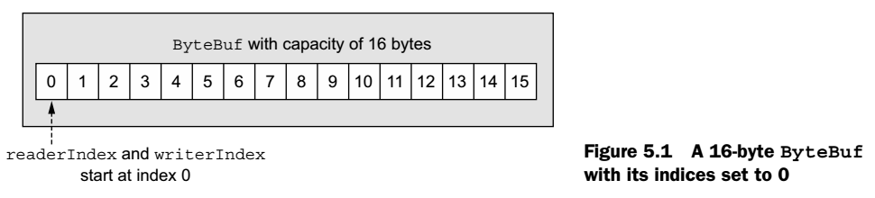
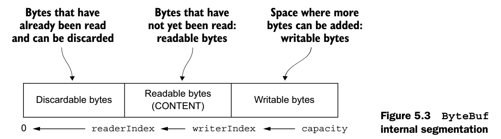

Chapter 5 - ByteBuf
5.1 The ByteBuf API
Advantages of ByteBuf API:
- It’s extensible to user-defined buffer types.
- Transparent zero-copy is achieved by a built-in composite buffer type.
- Capacity is expanded on demand (as with the JDK StringBuilder).
- Switching between reader and writer modes doesn't require calling ByteBuffer's flip() method.
- Reading and writing employ distinct indices.
- Method chaining is supported.
- Reference counting is supported.
- Pooling is supported.
5.2 Class ByteBuf
ByteBuf has two indexes, readerIndex and writerIndex:

The max capacity of a ByteBuf can be specified, moving writerIndex past this value will cause an exception
5.2.2 ByteBuf usage patterns
Heap Buffers
Store data in the JVM heap space.
Direct Buffers
Store data outside of heap, this is to avoid copying the buffer content to/from an intermediate buffer before/after a native I/O operation. This is ideal for network data transfer.
On the other side, it's harder to allocate and release than heap-based buffers.
Composite Buffers
It aggregates multiple ByteBufs.
If we don't want to reallocate both bufferes for each message, it's a good fit. (if messages contain same body but different headers, we can keep the body and replace header every time)
5.3 Byte-level operations
- We are able to access ByteBuf randomly by giving the index of the byte we want to get
 - The segment that is already read is discardable, which will be cleaned by calling discardReadBytes(), which will increase the size of writable bytes, but it also causes memory coping by moving the readable bytes to the beginning of the byteBuf.
- We can use ByteBufProcessor as a parameter of forEachByte() method of ByteBuf to do searching
- We can copy a byteBuf or slice it.
- There are many variants of read and write operations of ByteBuf
- Netty uses the PooledByteBufAllocator by default, which can be changed via ChannelConfig
5.6 Reference counting
It tracks the number of active references to a specific object, starting with 0.
As long as it's greater than 0, the object is guaranteed not to be released.